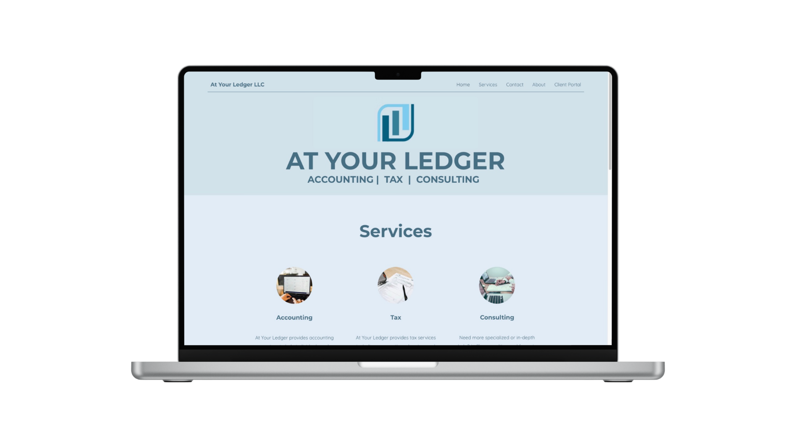

At Your Ledger

The Challenge
A specialized accounting firm had the expertise but not the presence. They needed a credible website that showed what they do without the overhead of a complex site. And they needed something flexible enough to scale into targeted marketing later without cluttering the main navigation.
What I Did
I built out the strategy and structure, then designed and built the site in Wix. That included the information architecture, messaging, visual identity, and contact flow. I also developed a framework for future industry-specific landing pages so they can target different verticals without confusion.
I still manage the site and continue to refine it as the firm grows.
Outcome
They have a polished, focused digital home that works for prospective clients and gives them a flexible foundation for more targeted marketing as they expand.